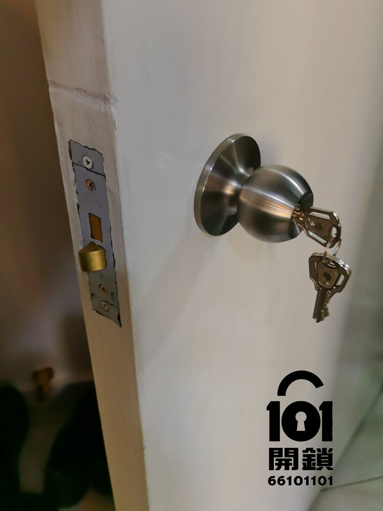

市場現象： 近年有大量客人從傳統機械鎖轉換成電子鎖（如飛利浦、耶魯、Panasonic、施耐德、樂信、鹿客、小米 等品牌）。電子鎖廠商為咗吸引用戶，同時確保安裝後門上唔會留有空隙，通常會將電子鎖嘅前後版面設計得比一般機械鎖更大。呢個做法可以完美覆蓋門上原有機械鎖嘅開窿位置，令外觀更整潔，亦減少因為門洞而影響選購意欲。
不過，當呢啲用家日後想「還原」返做機械鎖（例如唔再習慣電子操作、擔心電池問題、或者維修成本較高）希望轉返做傳統機械鎖，一了百了既時候，就會面對一個現實問題：門上已經因為安裝電子鎖而開多咗幾個螺絲窿，而且原有嘅開窿範圍可能比標準機械鎖大。市面上一般機械鎖嘅面板尺寸較細（大約 240mm x 60mm 或更小），根本遮唔住電子鎖留低嘅痕跡，導致門面出現幾個明顯嘅舊窿-「遮極都遮唔住」，大大限制咗用家嘅選擇。
101開鎖嘅專業見解： 還原機械鎖嘅關鍵，就係要搵一款「加大面板、加長設計」嘅機械鎖，能夠完全覆蓋電子鎖安裝時所產生嘅所有窿洞同埋壓印，唔需要額外做門板修補或噴漆，慳時間亦更美觀。

安裝前後對比
專門為電子鎖還原機械鎖而開發，面板特長設計，完美覆蓋飛利浦、小米、耶魯等電子鎖遺留窿洞。
標準機械鎖面板通常只有 240-280mm 長，電子鎖舊有開窿可能分散喺 300-400mm 範圍內，細面板無法覆蓋，側邊會露出螺絲窿。我哋推介嘅450mm長面板就可以完全遮蓋。
我地會沿用電子鎖已存在嘅螺絲位置或稍作微調，盡量避免額外鑽新窿。在鎖體尺寸上 只要大家都係240 x 24mm，係標準鎖體尺寸既情況就直接替換即可。又而前後板面亦可以覆蓋所有舊窿。
還原機械鎖需要更換整個鎖體同板面，因為電子鎖鎖體結構同機械鎖唔同，並唔能夠互相配合。我地提供全套機械鎖(包括整個鎖體同板面)，確保日後使用順暢。
機械鎖少左電子部分，唔會有受潮濕天氣影響電子零件問題，且無需電力維持運作。比電子鎖，機械鎖日常損壞率對係極低。
一般只需要30-45分鐘。
我地明白電子鎖用家既習慣，所以我地為客人選用既新鎖最大既好處就係無自動鎖功能，每次出門前必須用鎖匙反鎖，避免唔記得帶鎖匙而要搵開鎖師傅咁尷尬同緊急情況。
*101開鎖提供上門度尺服務，確認舊有電子鎖窿位，確保新鎖完全遮蓋，不留痕跡。
需要將電子鎖還原成機械鎖？立即聯絡101開鎖團隊，我哋會安排師傅上門評估舊窿位置，提供最合適嘅遮窿方案。
服務承諾： 報價清晰｜到場前確認總費用｜不成功不收費｜安裝後講解保養
仲有疑問？立即聯絡專人解答